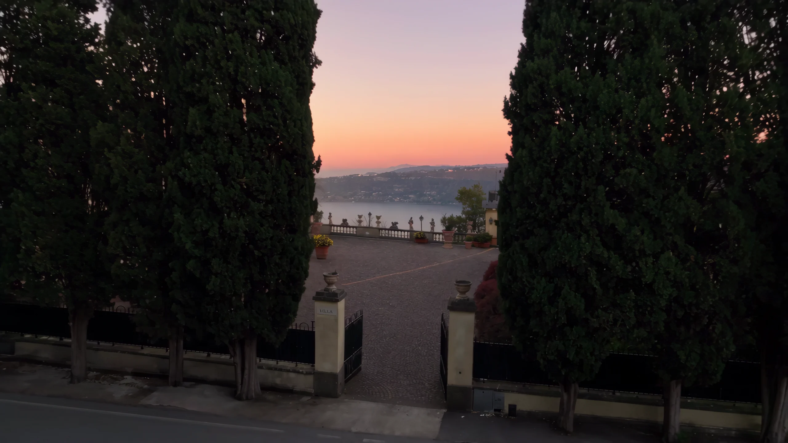
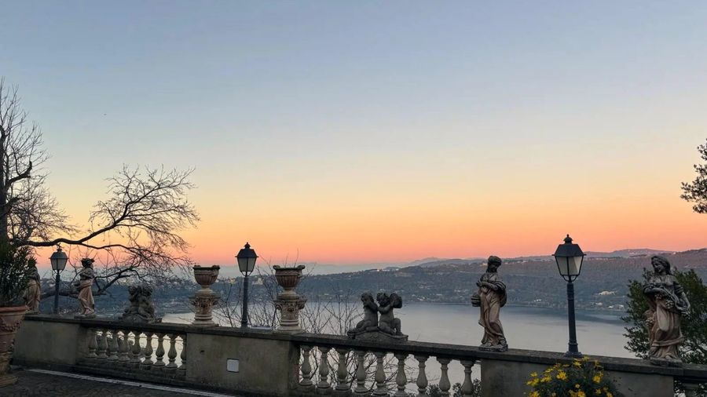

Palazzo Papale e giardini
Residenza estiva dei Papi, oggi museo con giardini sul lago.

Video generato con AI
Un appartamento di 85 metri quadrati con giardino, vista sul lago e una terrazza panoramica tra le statue. Spazio e tempo, tutti per voi.

Dalla balaustra lo sguardo scende sul giardino e si ferma sull’acqua del lago Albano. La sera il sole tramonta dietro le colline e la terrazza si accende di luce dorata.
Ti piace quello che vedi?
Prenota il tuo soggiorno al Pio XI
Soggiorno, cucina, camera e bagno: 85 m² su un piano, con il giardino appena fuori dalla porta.
Cucina privata attrezzata con macchina da caffè, lavatrice, TV con servizi di streaming, accappatoi e divano. Pavimenti in cotto e una camera con armadio e comò.
Il giardino è la parte migliore: si esce e ci si siede. Gli animali sono ammessi e il parcheggio è gratuito.

Castel Gandolfo sorge sulle colline sopra il lago di Albano, a sud di Roma, ed è nota per il Palazzo Apostolico.
Nei dintorni ci sono il lago di Albano, il lago di Nemi e il Parco regionale dei Castelli Romani, ideali per passeggiate, kayak e canoa.
Castel Gandolfo è sui Colli Albani, a circa 25 km a sud-est del centro di Roma. In auto ci si arriva dalla via dei Laghi o dall'Appia; in treno da Roma Termini con la linea regionale FL4 (direzione Albano Laziale), che ferma a Castel Gandolfo.
Dall'aeroporto di Roma Ciampino sono 9 km. Il parcheggio vicino all'appartamento è gratuito, in strada.
Pio XI Garden & Lake View ApartmentResidenza estiva dei Papi, oggi museo con giardini sul lago.
Le cupole dell’osservatorio del Papa, con visita guidata.

La chiesa del Bernini, la fontana e la prima cassetta postale.


Un piccolo cartone animato girato nel nostro appartamento in 3D: la statua della terrazza si sveglia, esce dalla porta-finestra e si tuffa nel lago Albano.
Tuffati nell’emozione del lago
Cartone animato di fantasia, non in scala
Viale Pio XI 31b, Castel Gandolfo
Sulle colline sopra il lago Albano, ai Castelli Romani, a sud di Roma. Si arriva in auto, con parcheggio gratuito in strada, oppure in treno con la linea FL4 da Roma Termini fino alla stazione di Castel Gandolfo.
La mappa si carica da Google Maps quando la aprite.
33 recensioni su Booking
L'appartamento è pulitissimo, la vista è fantastica ed è stato un soggiorno davvero piacevole.Ospite, ottobre 2026, su Booking
Location bellissima e pulitissima.Ospite, settembre 2026, su Booking
Bell'appartamento con vista lago. Grande e ben equipaggiato. Vicino al centro.Ospite, settembre 2026, su Booking

Giovanni Francesco D'Agostino
Host e proprietario della struttura Pio XI · property manager
Sono Giovanni Francesco D'Agostino e la struttura Pio XI Garden & Lake View Apartment è mia: un appartamento di 85 m² con giardino e terrazza panoramica sul lago di Albano, a Castel Gandolfo.
Faccio l'host e il property manager: gestisco appartamenti per soggiorni brevi e mi occupo io di accoglienza, pulizie e check-in. Quando scrivete, vi risponde direttamente il proprietario, senza intermediari.
Vivo ai Castelli Romani e vi do volentieri i consigli di chi è di qui: la porchetta di Ariccia, le fragoline di Nemi, la passeggiata intorno al lago e l'ora giusta per il tramonto dalla terrazza.
Prenotando dal sito ufficiale parli con noi, senza intermediari: ti rispondiamo noi, ti aiutiamo con le date e ti consigliamo cosa vedere.
Pagate a noi, senza commissioni dei portali: con carta, Apple Pay o Google Pay tramite Stripe, oppure con bonifico se preferite. Se le date non sono libere, vi rimborsiamo tutto.
Pagamento sicuro con Stripe. I dati della carta li inserite sulla pagina di Stripe, la piattaforma di pagamento usata da milioni di aziende: viaggiano cifrati e noi non li vediamo mai. Stripe è certificato PCI DSS di livello 1, il più alto per la sicurezza delle carte, e la vostra banca può chiedervi la conferma 3D Secure. Accetta carte, Apple Pay e Google Pay; se le date non sono libere vi rimborsiamo tutto.
Dopo la nostra conferma potete pagare anche con carta l'importo concordato (acconto o saldo). Il pagamento avviene sulla pagina sicura di Stripe: noi non vediamo i dati della carta.
Pagamento ricevuto, grazie! Vi mandiamo la conferma su WhatsApp o per email.
Il pagamento non è partito. Controllate importo e riferimento, oppure scriveteci su WhatsApp.
Scegliete date e ospiti, poi pagate subito con carta oppure mandateci la richiesta su WhatsApp.
Preferite prenotare su un portale?
Ci trovate anche su Booking, Airbnb e Vrbo, ma lì il prezzo è più alto per via delle commissioni del portale. Prenotando qui dal sito parlate direttamente con noi e pagate meno.
Sì, gli animali sono ammessi. Indicateci tipo e taglia nella richiesta.
Sì, gratuito, in strada.
No. C'è una cucina privata e in paese trovate bar e pasticcerie.
Sì, per raggiungere l'appartamento ci sono diverse scale. Se viaggiate con valigie pesanti o avete difficoltà motorie, scriveteci prima.
Check-in 14:00-16:00, check-out 8:00-11:00. Si paga online con carta, Apple Pay o Google Pay (tramite Stripe), oppure con bonifico dopo il contatto su WhatsApp.
In Viale Pio XI 31b, a Castel Gandolfo (RM), sulle colline sopra il lago di Albano, a sud di Roma.
Il centro di Roma è a circa 25 km. L'aeroporto di Roma Ciampino è a 9 km, la metro Anagnina a 16 km e la metro Ponte Lungo a 21 km.
Sì. Dalla struttura si vede il lago di Albano, e c'è un giardino; la terrazza panoramica con le statue guarda sul lago.
Sì. Prenotando qui dal sito pagate meno, perché non ci sono le commissioni dei portali, e parlate direttamente con il proprietario. Potete pagare con carta oppure scriverci su WhatsApp.
Da 75 € a notte. Il prezzo cambia in base al periodo: scegliendo le date nel modulo vedete subito il totale.